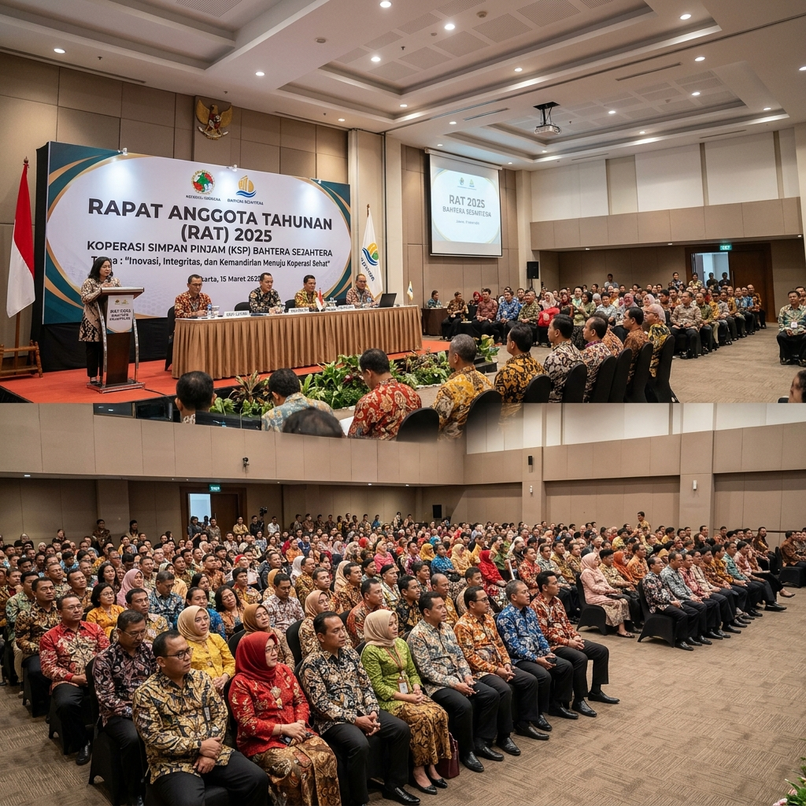
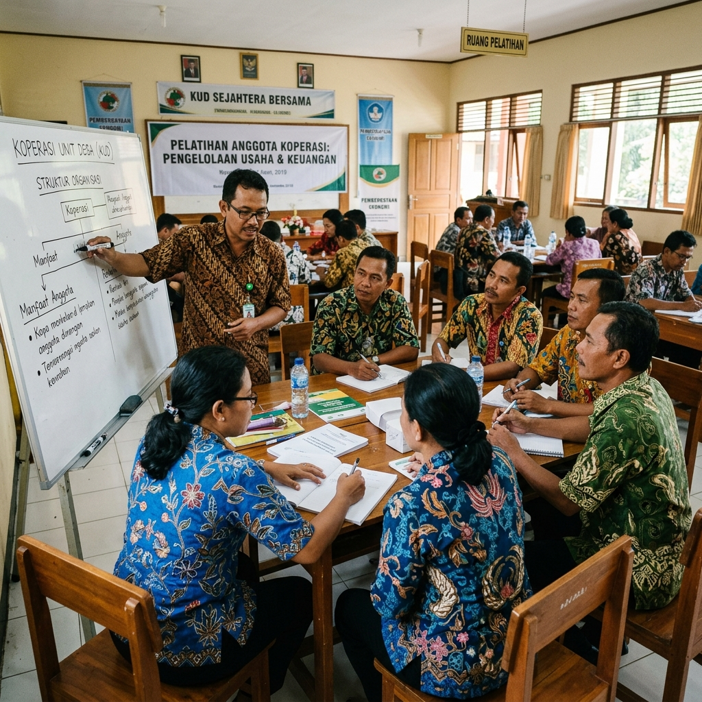
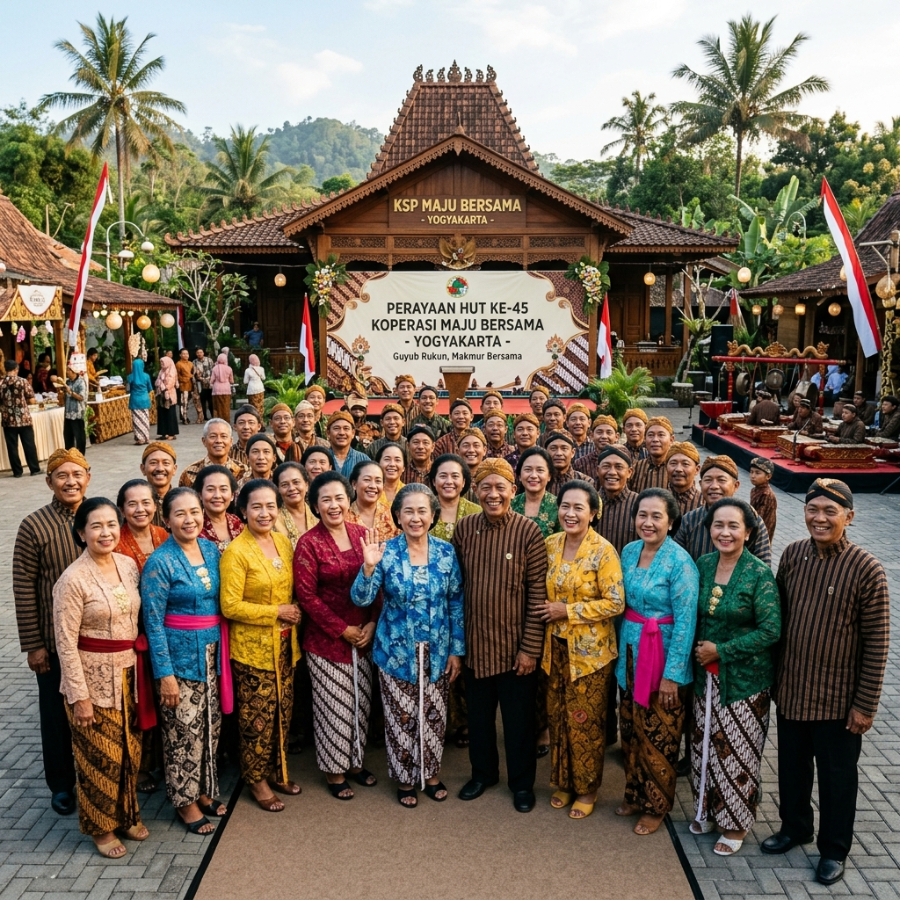
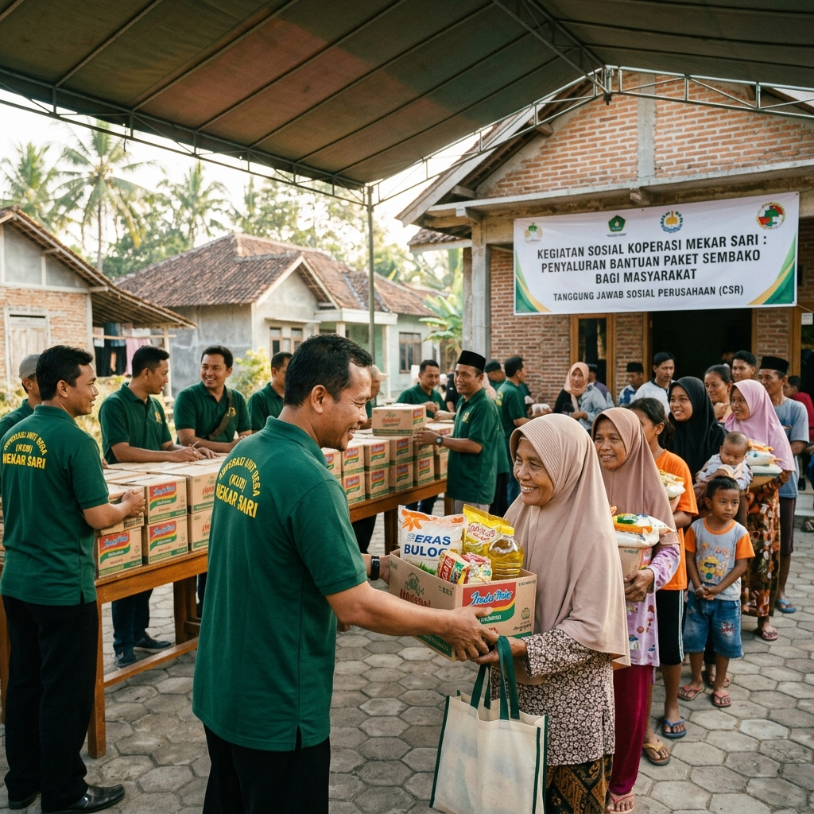
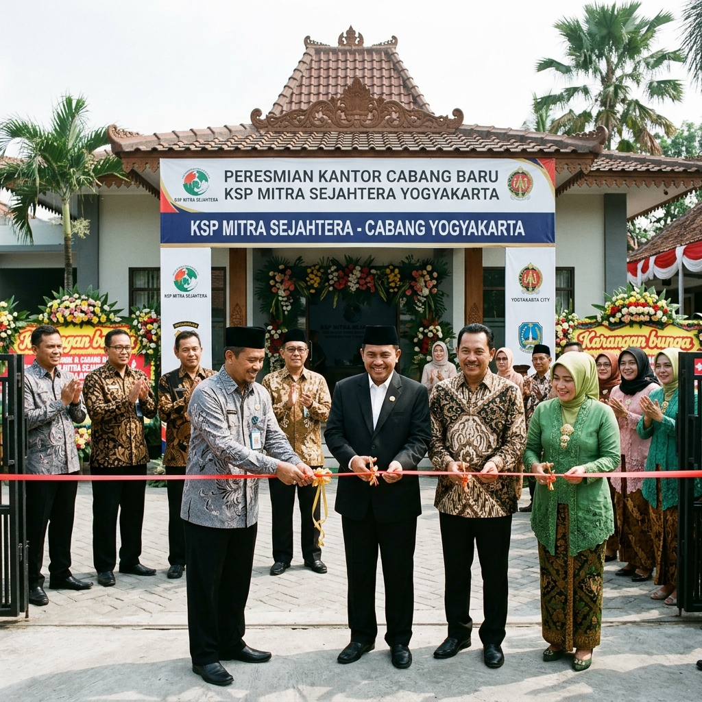

Pengurus
Ahmad Rizani
Ketua
KOPANA Yogyakarta
"Melayani Anggota dengan Integritas dan Kebersamaan Sejak 1996"
KOPANA hadir sebagai koperasi modern yang mengutamakan pelayanan, transparansi, profesionalisme, serta kesejahteraan anggota melalui pengelolaan usaha yang berkelanjutan dan bertanggung jawab.

KOPANA — Koperasi Jasa Serba Usaha Purnakaryawan Pertamina — didirikan pada tahun 1996 oleh para purnakaryawan Pertamina yang bertekad mewujudkan kesejahteraan bersama melalui wadah koperasi yang kuat dan modern.
Berlokasi di Brambang Gatak, Selomartani, Kalasan, Sleman, Daerah Istimewa Yogyakarta, KOPANA telah berkembang menjadi lembaga keuangan koperasi yang dipercaya oleh ratusan anggota. Selama lebih dari tiga dekade, KOPANA konsisten memberikan layanan terbaik di bidang simpan-pinjam, investasi, dan jasa lainnya bagi para purnakaryawan Pertamina dan keluarganya.
Dengan semangat kebersamaan dan azas kekeluargaan, KOPANA terus bertransformasi menghadirkan layanan digital melalui aplikasi anggota berbasis Google Apps Script yang dapat diakses secara online.
Menjadi koperasi jasa terpercaya, modern, dan profesional yang mampu meningkatkan kesejahteraan anggota secara berkelanjutan berdasarkan nilai-nilai integritas dan kebersamaan.
Memberikan layanan simpan-pinjam dan jasa yang mudah, cepat, dan transparan kepada seluruh anggota.
Meningkatkan kompetensi pengurus, pengawas, dan karyawan melalui pelatihan dan pendidikan berkala.
Mengelola keuangan koperasi secara akuntabel, efisien, dan bertanggung jawab demi kepercayaan anggota.
Mengembangkan sistem informasi dan teknologi digital untuk meningkatkan kualitas pelayanan kepada anggota.
Menjalin sinergi dan kemitraan strategis yang saling menguntungkan untuk pengembangan usaha koperasi.
Enam pilar nilai yang menjadi landasan seluruh kegiatan dan pelayanan KOPANA kepada anggota:
Assalamu'alaikum Warahmatullahi Wabarakatuh. Puji syukur kita panjatkan kepada Allah SWT atas segala rahmat dan karunia-Nya sehingga KOPANA terus berkembang dan memberikan manfaat nyata bagi seluruh anggota.
Selama lebih dari 30 tahun berdiri, KOPANA telah membuktikan diri sebagai mitra terpercaya bagi para purnakaryawan Pertamina dan keluarganya. Kami berkomitmen untuk terus meningkatkan kualitas layanan, memperkuat tata kelola yang transparan dan akuntabel, serta mendorong inovasi teknologi demi kemudahan anggota dalam mengakses seluruh layanan koperasi.
Mari bersama kita jaga amanah dan kepercayaan ini, karena kemajuan KOPANA adalah kemajuan kita bersama. Wassalamu'alaikum Warahmatullahi Wabarakatuh.
Pengurus KOPANA yang dipilih dan dipercaya oleh anggota untuk memimpin koperasi secara profesional dan bertanggung jawab.
Ketua
Sekretaris
Bendahara
Dewan Pengawas KOPANA bertugas memastikan seluruh kegiatan koperasi berjalan sesuai anggaran dasar, anggaran rumah tangga, dan peraturan yang berlaku.
Ketua Pengawas
Anggota Pengawas
Anggota Pengawas
KOPANA hadir di berbagai wilayah melalui jaringan perwakilan cabang yang siap melayani anggota di daerah masing-masing.
Cabang Utara
Melayani seluruh anggota KOPANA di wilayah Utara Yogyakarta dan sekitarnya.
Cabang Selatan
Melayani seluruh anggota KOPANA di wilayah Selatan Yogyakarta dan sekitarnya.
Cabang Magelang
Melayani seluruh anggota KOPANA yang berdomisili di wilayah Magelang dan sekitarnya.
Informasi terbaru tentang kegiatan, program, dan pengumuman resmi dari KOPANA Yogyakarta.
 RAT
RAT
Rapat Anggota Tahunan KOPANA tahun buku 2025 telah dilaksanakan dengan lancar. Seluruh laporan keuangan dan pertanggungjawaban pengurus diterima dengan baik oleh seluruh anggota yang hadir.
Baca Selengkapnya Pelatihan
Pelatihan
KOPANA menyelenggarakan pelatihan manajemen keuangan keluarga yang diikuti oleh lebih dari 50 anggota dan pasangan. Pelatihan ini bertujuan meningkatkan literasi keuangan dalam rumah tangga.
Baca Selengkapnya Gathering
Gathering
Kegiatan gathering tahunan KOPANA berhasil mempertemukan ratusan anggota dan keluarga dalam suasana penuh kekeluargaan. Berbagai kegiatan seru dan hadiah menarik mewarnai acara bergengsi ini.
Baca SelengkapnyaDokumentasi berbagai kegiatan dan momen penting KOPANA Yogyakarta.





Kami siap membantu Anda. Jangan ragu untuk menghubungi kami melalui informasi kontak di bawah ini.
Brambang Gatak, Selomartani
Kalasan, Sleman
Daerah Istimewa Yogyakarta
Peta Lokasi KOPANA
Brambang Gatak, Selomartani, Kalasan, Sleman, DIY
Buka di Google Maps [GOOGLE_MAPS] — Ganti dengan embed Maps sesungguhnyaMasuk ke aplikasi resmi KOPANA untuk melihat simpanan, pinjaman, transaksi, kartu anggota digital dan layanan lainnya kapan saja dan di mana saja.
Aplikasi Kopana